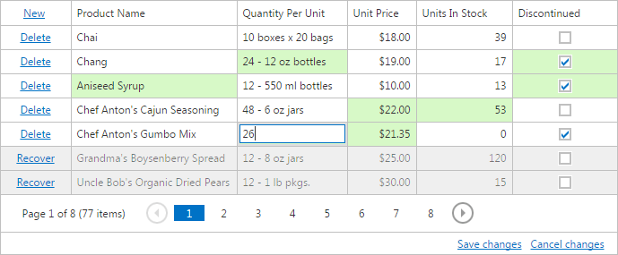

Batch Editing
The Grid allows you to edit a group of grid records (on a single page) and save these changes with one click. In this view, you can create new rows, delete existing rows and edit individual cell values.
- To create a new row, click New and specify the field values.
- To delete a row, click Delete within the row to be deleted.
- To focus a cell and edit the value of a cell, use one of following approaches available depending on settings made by your application vendor.
- Click on the cell to focus it and edit its value.
- Click on the cell to focus it. Double-click on the focused cell to edit it.
- Click on the cell to focus it. Click on the focused cell to edit it.
You can navigate through cells and edit cell values using the keyboard.
Navigation
- Use the TAB and SHIFT+TAB keys to move focus forward and backward. The edit state will be preserved for the next cell.
- Use the arrow keys to move focus between cells.
Editing
- Use the ENTER key to edit the focused cell.
- Use the ESC key to finish editing of the focused cell.
- Use the ENTER key to move focus ahead of the edited cell. The edit state will be preserved for the next cell.
The cells that were modified are highlighted in a different color. To save all changes, click Save changes. To cancel all changes, click Cancel changes.

If a Grid contains unsaved data, a confirmation message is displayed before the data is lost (e.g., when sorting the data, changing the grid page or closing the web page).

Click OK to cancel all data changes and proceed with the action, or click Cancel to cancel the action.